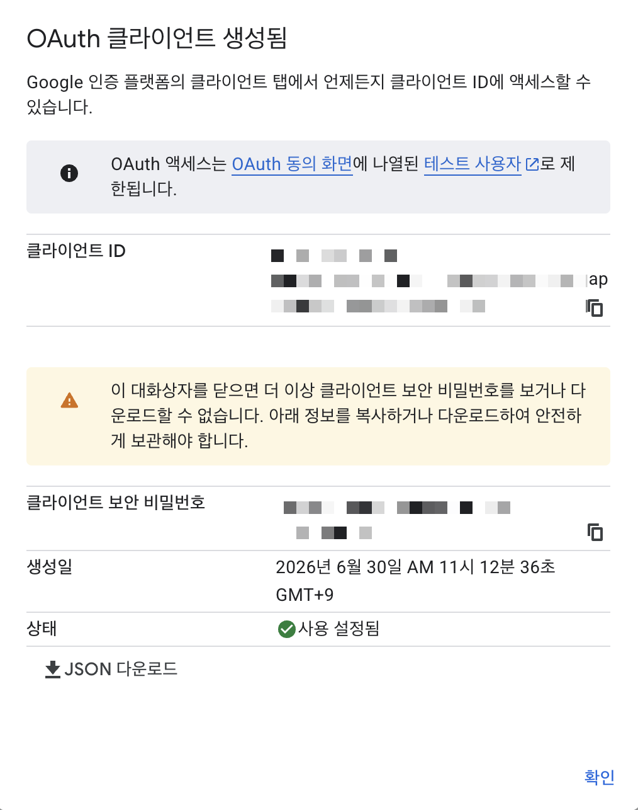

Google 크리덴셜(OAuth) 설정 — self-host n8n
Lab2~5에서 구글 Sheets·Gmail을 n8n에 연결하려면 Google OAuth 자격증명이 필요해요. 이게 비개발자에게 가장 어려운 관문이라, ★강의에선 강사 공용 데모 계정을 먼저 권장하고, 본인 계정 연결은 선택/심화로 둡니다.
★핵심 1 — self-host redirect URI (Cloud와 다름!)
n8n Credential 화면(예: Google Sheets account)에 뜨는 OAuth Redirect URL:
http://localhost:5678/rest/oauth2-credential/callback
- ★self-host =
localhost:5678. (n8n Cloud는https://<계정>.app.n8n.cloud/...라 다름) - 이 URL을 Google Cloud Console의 Authorized redirect URIs에 그대로 등록해야 연결됨.
- 포트를 바꿨으면(
N8N_PORT=8080) URI도 그 포트로.
단계 — 본인 구글 계정으로 연결할 때
- console.cloud.google.com 접속 → 프로젝트 생성/선택.
- APIs & Services → Library → Google Sheets API·Google Drive API(Gmail도 쓰면 Gmail API) 검색 → 각각 Enable.
- APIs & Services → OAuth consent screen → External → 앱 이름·지원 이메일 입력 → 테스트 사용자에 본인 이메일 추가.
- APIs & Services → Credentials → Create Credentials → OAuth client ID.
- Application type = Web application.
- Authorized redirect URIs 에 위 URL 붙여넣기:
http://localhost:5678/rest/oauth2-credential/callback - 생성된 Client ID · Client Secret 복사.
- n8n Credential 화면에 Client ID·Secret 붙여넣기 → Sign in with Google → 동의.
- Gmail도 같은 방식(같은 OAuth 클라이언트 재사용 가능 — Gmail API Enable 필요).

▲ 7단계 화면 — OAuth 클라이언트를 만들면 뜨는 "OAuth 클라이언트 생성됨" 창. 여기서 클라이언트 ID·클라이언트 보안 비밀번호를 복사해 n8n Credential 화면에 붙여넣어요. ★이 창을 닫으면 보안 비밀번호를 다시 못 봅니다 → 즉시 복사하거나 JSON 다운로드. ⚠️ 실제 값은 비밀번호이니 화면 공유·캡처·깃 커밋 금지(이 예시는 마스킹된 화면).
★핵심 2 — 강의 운영 권장(공용 계정)
- 비개발자 각자 OAuth 설정은 10~20분+ 걸리고 막히기 쉬워요. → 강사가 OAuth 완료한 공용 데모 계정 1개를 준비하고, 수강생은 그 자격증명을 공유받아 쓰는 게 현실적(런북 §1.3 대체 핸즈온).
- 본인 계정 연결은 심화/숙제로 돌려 강의 흐름이 막히지 않게.
흔한 막힘
| 증상 | 원인 | 해결 |
|---|---|---|
redirect_uri_mismatch |
Cloud Console URI ≠ n8n 화면 URL | 끝 슬래시·포트까지 정확히 일치 |
API not enabled / 403 |
Sheets·Drive·Gmail API 미활성화 | Library에서 해당 API Enable |
access_blocked (테스트 앱) |
consent screen 테스트모드 | 본인 이메일을 테스트 사용자에 추가 |
| 사내 계정 동의 막힘 | 회사 Google Workspace 정책 | 사내 IT에 외부 OAuth 앱 허용 확인(또는 공용 계정) |
⚠️ Google Cloud Console 메뉴·화면은 자주 바뀝니다 → 강의 전 본인 화면에서 1회 dry-run 으로 경로를 확인하세요. (이 문서는 절차 안내용, 화면 라벨은 당일 기준)